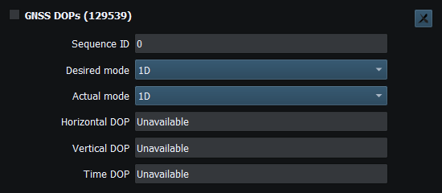
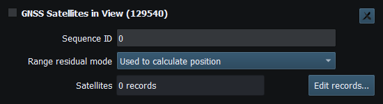
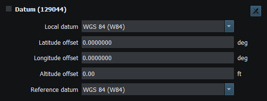
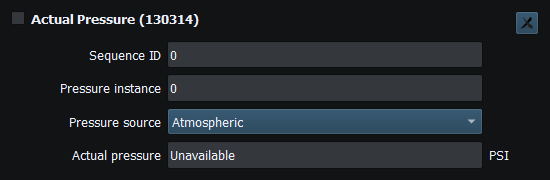
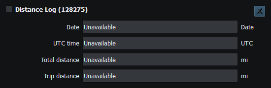
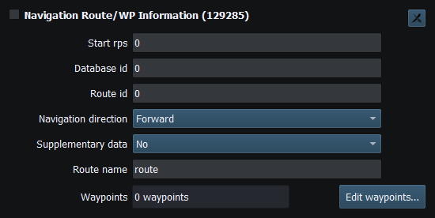
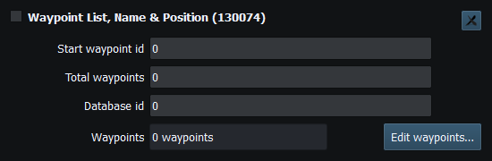

An instrument represents a supported NMEA2000 PGN or NMEA0183 sentence mapping. Optional generator sources supply dynamic values; manual properties are sufficient for supported basic TX. Adding a generator is not a prerequisite for encoding an otherwise supported instrument.
Complete implemented instrument inventories: Supported NMEA2000 PGNs and Supported NMEA0183 Sentences. Direction limits and service-only messages are explained there.
Viewer recognizes supported incoming PGNs and sentences and updates matching instruments. Diagnostics can also show raw messages without an instrument. In Generate, use manual properties or compatible generator bindings, then set instrument Enable/interval and explicitly enable Sending on a ready connection.
Use Supported NMEA2000 PGNs and Supported NMEA0183 Sentences to find the message, direction and field limits you need.
The available lists and Property Editor describe the current build's editable surface. Representative groups include navigation/GNSS, engine/transmission, environmental, tanks/electrical, AIS and structured route/waypoint data. PGN 65359 applies only for the Raymarine manufacturer 1851/industry 4 variant; naming an arbitrary proprietary PGN is not a complete decoder.
NMEA0183 support includes existing navigation sentences and expanded supported depth, wind, route and other instruments; inspect each mapping rather than inferring TX from RX or RX from an encoder. Structured messages expose bounded record editors. Invalid/incomplete records must be corrected before use; a list existing in the UI is not universal external-device compatibility.
For messages absent from the references, inspect their raw data in Diagnostics. Correct invalid or incomplete structured records before sending; each message has its own record and size limits.

Figure 99. GNSS dilution-of-precision modes and values (PGN 129539). Click to enlarge.

Figure 100. GNSS satellite records (PGN 129540). Click to enlarge.

Figure 101. Datum codes and coordinate offsets (PGN 129044). Click to enlarge.

Figure 102. Pressure source, instance and value (PGN 130314). Click to enlarge.

Figure 103. Total and trip distance logs (PGN 128275). Click to enlarge.

Figure 104. Route identity and waypoint records (PGN 129285). Click to enlarge.

Figure 105. Waypoint list and page fields (PGN 130074). Click to enlarge.
Engineering Units · Security and Privacy · Licensing and Credits · Using RayNmeaSimulator Safely · Connection Troubleshooting · Enable, Dispatch and Sending · Route Overview